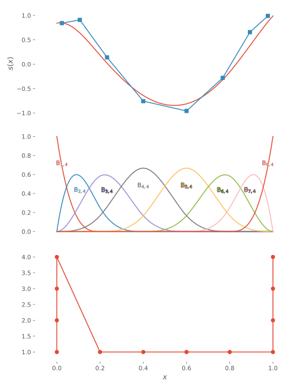
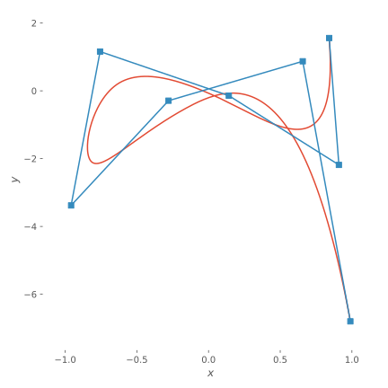

Spline creation & evaluation
A spline is constructed as a linear combination of B-splines:
\[\begin{equation}
\label{eqn:spline}
s(x) = \sum_{j=1}^{n_{tk}} \B{j}{k}(x)c_j \defd B\vec{c}.
\end{equation}\]
This is easily done as
julia> k = 4
4
julia> t = LinearKnotSet(k, 0, 1, 5)
12-element LinearKnotSet{4,4,4,Float64,StepRangeLen{Float64,Base.TwicePrecision{Float64},Base.TwicePrecision{Float64}}}:
0.0
0.0
0.0
0.0
0.2
0.4
0.6
0.8
1.0
1.0
1.0
1.0
julia> B = BSpline(t)
BSpline{Float64} basis with LinearKnotSet(Float64) of order k = 4 (cubic) on 0.0..1.0 (5 intervals)
julia> size(B)
(ContinuumArrays.AlephInfinity{1}(), 8)
julia> c = sin.(1:size(B,2))
8-element Array{Float64,1}:
0.8414709848078965
0.9092974268256817
0.1411200080598672
-0.7568024953079282
-0.9589242746631385
-0.27941549819892586
0.6569865987187891
0.9893582466233818
julia> s = B*c
Spline on BSpline{Float64} basis with LinearKnotSet(Float64) of order k = 4 (cubic) on 0.0..1.0 (5 intervals)Naturally, we can evaluate the spline similarly to above:
julia> s[0.3]
-0.28804656969083225
julia> s[0.3:0.1:0.8]
6-element Array{Float64,1}:
-0.28804656969083225
-0.6408357079724976
-0.8250002333223664
-0.8119858486932346
-0.5856964504991202
-0.15856643671353235If many different splines sharing the same B-splines are going to be evaluated, it is usually more efficient to evaluate the basis functions once and reuse them:
julia> χ = B[0:0.25:1.0, :]
5×8 SparseArrays.SparseMatrixCSC{Float64,Int64} with 14 stored entries:
[1, 1] = 1.0
[2, 2] = 0.105469
[2, 3] = 0.576823
[3, 3] = 0.0208333
[2, 4] = 0.315104
[3, 4] = 0.479167
[4, 4] = 0.00260417
[2, 5] = 0.00260417
[3, 5] = 0.479167
[4, 5] = 0.315104
[3, 6] = 0.0208333
[4, 6] = 0.576823
[4, 7] = 0.105469
[5, 8] = 1.0
julia> χ*c
5-element Array{Float64,1}:
0.8414709848078965
-0.06366510061255656
-0.8250002333223664
-0.39601358159504896
0.9893582466233818
It is then trivial to extend this to two dimensions:
julia> c̃ = [sin.(1:size(B,2)) tan.(1:size(B,2))]
8×2 Array{Float64,2}:
0.841471 1.55741
0.909297 -2.18504
0.14112 -0.142547
-0.756802 1.15782
-0.958924 -3.38052
-0.279415 -0.291006
0.656987 0.871448
0.989358 -6.79971
julia> s̃ = B*c̃
2d spline on BSpline{Float64} basis with LinearKnotSet(Float64) of order k = 4 (cubic) on 0.0..1.0 (5 intervals)
julia> size(s̃)
(ContinuumArrays.AlephInfinity{1}(), 2)